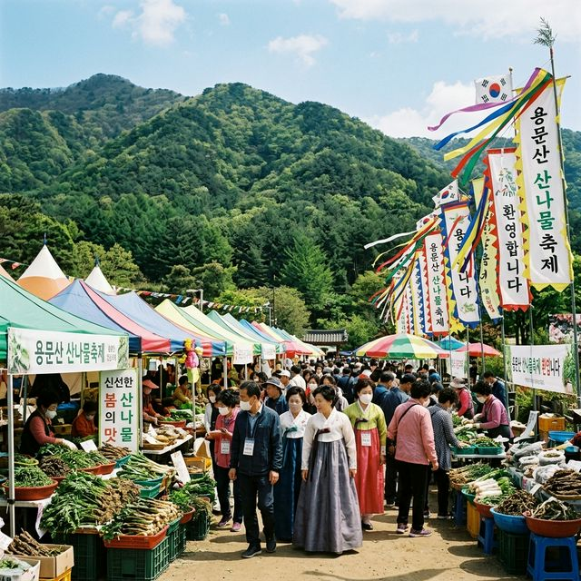
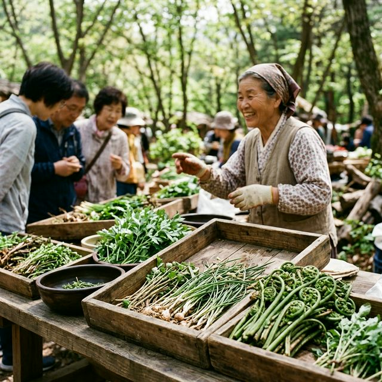
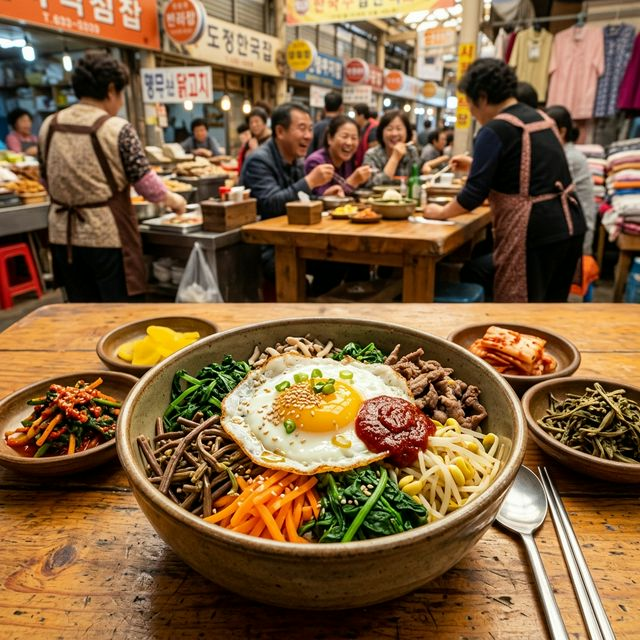

이번 축제는 2026년 4월 24일(금)부터 4월 26일(일)까지 3일간 경기도 양평군 용문산 관광지 일원에서 성대하게 개최됩니다. 양평은 물 맑고 공기 좋은 고장으로 잘
알려져 있는데, 이곳에서 자란 산나물은 그 향과 맛이 유독 진해 예로부터 귀한 대접을 받아왔죠. 축제 기간 동안 오전 10시부터 오후 6시까지 다채로운 공연과 체험 행사가 쉼 없이
이어집니다.
주 행사장은 용문산 관광지 입구부터 시작하여 용문사 아래까지 넓게 펼쳐져 있습니다. 산나물 직거래 장터는 물론, 가족 단위 방문객을 위한 체험 부스와 먹거리 장터가 구역별로 짜임새 있게 배치되어 관람
동선이 매우 쾌적합니다. 봄꽃이 만개한 용문산의 경치를 감상하며 제철 산나물의 건강함까지 챙길 수 있는 이번 축제는 4월 최고의 나들이 코스가 될 것입니다.
| 행사 명칭 | 제16회 양평 용문산 산나물축제 |
|---|---|
| 축제 기간 | 2026. 04. 24 (금) ~ 04. 26 (일) |
| 개최 장소 | 양평군 용문산 관광지 일원 (용문면 용문산로 786) |
| 입장 요금 | 무료 관람 (체험 및 구매 비용 본인 부담) |

용문산 관광지 입구에 마련된 산나물 축제장 전경 / AI 제작 이미지
양평 용문산 산나물이 특별한 이유는 그 **청정 환경**에 있습니다. 해발 1,157m의 험준한 산세 속에서 자라난 나물들은 일교차가 큰 기후 덕분에 섬유질이 풍부하고 영양분이 고스란히 담겨 있죠.
특히 조선 시대에는 가을의 햅쌀과 함께 이 용문산 산나물이 임금님께 진상될 정도로 그 품질을 인정받았습니다.
축제장에서 만날 수 있는 참취, 곰취, 두릅 등은 봄철 나른해지기 쉬운 몸에 비타민과 미네랄을 보충해 주는 최고의 천연 영양제입니다. 특히 곰취는 독특한 향과 쌉싸름한
맛으로 식욕을 돋우는 데 탁월하며, 두릅은 단백질과 칼슘이 풍부해 '산속의 소고기'라고도 불립니다. 전문가들이 직접 엄선한 최고의 산나물들을 시중보다 저렴한 가격에 구매할 수 있는 것이 이번 축제의
가장 큰 매력입니다.
올해 양평 용문산 산나물축제에서 가장 눈에 띄는 변화는 '탄소중립 실천'입니다. 축제장 내 모든 먹거리 장터에서는 일회용품 대신 다회용기를 사용하며, 방문객이 개인
텀블러나 다회용기를 지참할 경우 산나물 구매 시 소정의 할인 혜택을 제공하는 등 적극적인 친환경 캠페인을 전개하고 있습니다. 산나물의 건강함을 즐기는 만큼 자연을 보호하자는 의미 깊은
시도죠.
또한, 축제장 곳곳에는 에코 체험 존이 마련되어 있습니다. 폐현수막을 활용한 에코백 만들기, 산나물 모종 화분 만들기 등 아이들에게 환경 보호의 중요성을 일깨워 줄 수
있는 교육적인 프로그램들이 가득합니다. 먹고 즐기는 축제에서 한 걸음 더 나아가, 지구를 생각하는 가치 있는 소비를 경험할 수 있다는 점에서 올해 축제는 더욱 특별한 의미를 가집니다.

갓 채취한 신선한 용문산 산나물들의 모습 / AI 제작 이미지
축제 기간 용문산 주변은 주차 공간 확보가 매우 어렵기로 유명합니다. 이에 양평군에서는 방문객의 편의를 위해 무료 셔틀버스를 대폭 확충하여 운영하고 있습니다.
용문역(경의중앙선)과 주요 임시 주차장에서 축제장까지 15~20분 간격으로 버스가 수시로 운행되므로, 가급적 대중교통을 이용해 용문역까지 오시는 것이 시간을 아끼는 지름길입니다.
자차를 이용하시는 분들은 용문산 입구까지 진입하기보다는 지평면 또는 용문면 내 임시 주차장에 차를 세우고 셔틀버스로 갈아타는 것을 강력히 추천합니다. 축제장 주차장은 오전
일찍 만차되는 경우가 많고, 인근 도로는 극심한 정체를 빚기 때문입니다. 셔틀버스 노선과 시간표는 양평군 홈페이지나 축제 공식 SNS에서 실시간으로 확인할 수 있으니 방문 전 꼭 체크해 보세요.
산나물축제의 꽃은 역시 먹거리입니다. 정겨운 주막 형태의 장터에서는 산나물을 주재료로 한 기발하고 맛깔스러운 요리들이 방문객을 유혹합니다. 가장 인기 있는 메뉴는 단연
'산나물 비빔밥'입니다. 갓 지은 밥 위에 십여 가지의 신선한 나물과 고소한 들기름, 그리고 양평만의 비법 고추장을 슥슥 비벼 먹는 그 맛은 한 번 맛보면 잊기 힘들
정도로 일품입니다.
이 외에도 노릇노릇하게 부쳐낸 산나물전과 아삭한 식감이 살아있는 산나물 튀김, 시원한 산나물 막걸리까지
다채로운 메뉴가 준비되어 있습니다. 특히 올해는 지역 청년 셰프들이 개발한 '산나물 핫도그'와 '산나물 파스타' 등 퓨전 메뉴들도 선보여 젊은 층의 입맛까지 사로잡고 있습니다. 자연이 주는 선물인
산나물의 무한한 변신을 축제 현장에서 직접 확인해 보시기 바랍니다.
양평 산나물축제는 아이 교육용으로도 훌륭한 장소입니다. '산나물 모종 심기 체험'은 직접 흙을 만지며 작은 생명력을 심어보는 활동으로, 도심 속 아이들에게 자연의 소중함을
알려줍니다. 또한, 산나물을 활용한 수제 비누 만들기나 손수건 천연 염색 체험 등 감성을 자극하는 다채로운 부스들이 줄지어 방문객을 맞이하고 있습니다.
축제장 한쪽에서는 전통 민속놀이 체험 존도 운영됩니다. 투호 던지기, 제기차기, 떡메치기 등 부모님 세대에게는 향수를, 아이들에게는 새로운 즐거움을 주는 전통 놀이들이
가득합니다. 특히 금방 쳐낸 쫄깃한 인절미를 그 자리에서 콩고물에 묻혀 먹는 떡메치기 체험은 축제의 흥을 더해주는 백미 중 하나입니다.

축제의 별미, 영양 가득한 산나물 비빔밥 / AI 제작 이미지
산나물축제를 즐긴 후에는 용문사까지 이어지는 산책로를 꼭 걸어보세요. 숲길을 따라 걷다 보면 만날 수 있는 용문사 은행나무는 천연기념물로 지정된 대한민국에서 가장 오래된
은행나무 중 하나입니다. 1,100년이 넘는 세월 동안 변함없이 그 자리를 지켜온 나무의 웅장함은 보는 이로 하여금 경외심을 느끼게 합니다.
용문사의 고즈넉한 사찰 분위기는 축제의 활기찬 분위기와는 또 다른 평온함을 선사합니다. 사찰 마당에서 들려오는 은은한 풍경 소리와 산들바람에 실려 오는 장작 타는 냄새는 여행의 피로를 씻어주는 기분
좋은 휴식이 되어주죠. 템플스테이 프로그램도 운영하고 있어, 자연 속에서 조용히 자신을 돌아보고 싶은 분들에게는 더없이 좋은 기회가 될 것입니다.
축제장에서 산나물을 구매할 때는 색깔과 향을 잘 살펴야 합니다. 잎이 싱싱하게 살아있고 고유의 색이 선명한 것이 좋은 나물이며, 줄기가 너무 억세지 않고 부드러운 것을
골라야 조리 후에도 식감이 좋습니다. 현장 상인분들께 나물의 이름과 조리법을 물어보면 친절하게 설명해 주시니 주저 말고 질문해 보세요.
구매한 생나물은 가급적 빨리 조리하는 것이 좋지만, 보관이 필요하다면 살짝 데쳐서 찬물에 헹군 뒤 물기를 짜고 지퍼백에 넣어 냉동 보관하면 오래도록 그 향을 즐길 수
있습니다. 건나물을 구매할 경우에는 직사광선을 피해 서늘하고 통풍이 잘되는 곳에 보관해야 곰팡이가 생기지 않습니다. 축제장의 정직한 땀방울이 담긴 좋은 산나물로 풍성한 식탁을 꾸려보시기 바랍니다.
양평 용문산 산나물축제를 완벽하게 즐기기 위한 마지막 점검입니다. 야외 활동이 많으므로 자외선 차단제와 선글라스는 필수입니다. 산비탈을 걷는 코스가 있으니 편안한 신발을
착용하시고, 산나물을 담아갈 장바구니나 에코백을 챙겨오시면 비닐 봉투 사용을 줄이는 환경 보호에 동참할 수 있습니다.
축제장 내에서의 무분별한 쓰레기 배출은 금지되며, 지정된 흡연 구역 외 전 구역은 금연입니다. 또한, 산나물 가격 흥정은 시장의 재미이기도 하지만 너무 무리한 요구는 현장에서 땀 흘리는 농민분들께
실례가 될 수 있으니 주의해 주세요. 자연의 건강함과 사람의 정이 어우러진 양평 용문산 산나물축제에서 여러분의 활력을 가득 충전해 가시길 바랍니다.